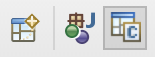

Настройка Eclipse для Java и C/C++ в MacOS

Небходимо настроить Eclipse для работы с проектами и на Java, и на C/C++. В моем случае изначально стоял пакет Eclipse CDT для работы с C/C++, который следовало обновить до актуальной версии. Сносим старый, ставим новый с официального сайта.
Заодно проверям установленную версию версию Java:
$ java -version
Плачем. Загружаем свежую.
В EclipseInstaller выбираем пакет “Eclipse IDE for Java Developers”, поддержку C/C++ поставим позже. Для окружения Java создаем отдельную директорию - eclipse/java, для C/C++ - eclipse/cpp.
Переходим в Help > Install New Software. Выбираем Work with: согласно используемой версии сборки (в моем случае это photon - 9.5) - Photon - http://download.eclipse.org/tools/cdt/releases/9.5.
Устанавливаем пакеты из группы CDT Main Features (C/C++ Development Tools, C/C++ Development Tools SDK).
Добавим окружение C/C++: Window > Perspective > Open Perspective > Other > C/C++. Теперь мы можем менять рабочее окружение с Java на C/C++ и наоборот по клику на соответсвующую иконку в правом верхнем углу экрана:

Осталась только одна проблема - заставить работать пакет CDT (на MacOS при попытке компилляции выходит сообщение “Launch failed. Binary not found.”). Все плохо настолько, что после ввода “launch failed binary not found”, Google сам добавляет “eclipse c++ mac”.
Решение: Project > Properties > C/C++ Build > Settings > Binary Parsers. Снимаем флажки со всего, кроме Mach -O 64 Parser. Проверяем, чтобы в C/C++ Build > Tool Chain Editor было установлено Current toolchain: MacOSX GCC. Кликаем Apply and Close. Все работает, Вы восхительны. 🎊